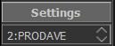
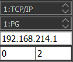
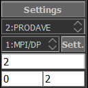
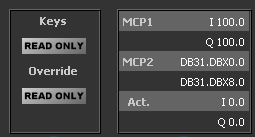
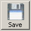

MCP483/310 software pentru Sinumerik
Virtual MCP VirtualMCP este un mic program ce emuleaza comportamentul unui panou de control SINUMERIK de tip MCP483 sau MCP310 atunci cand este conectat la un echipament SINUMERIK 840D sau SINUMERIK ONE.
TProgramul poate fi utilizat pentru controlul la distanta a unui echipament real, atunci cand panoul MCP real este inaccesibil sau greu accesibil pentru utilizator.
Instalare
Descarcati si dezarhivati arhiva cu programul
Toate setarile sunt salvate in fisierul virtualmcp.ini, aflat in acelasi director/folder.
Conectare

Conectarea este posibila prin TCP/IP (in mod PG, OP sau S7) sau prin PRODAVE (in mod MPI/DP, TCP/IP sau ISO).
Pentru a putea utiliza PRODAVE, o copie a bibliotecii Prodave6.dll trebuie copiata in directorul din care ruleaza VirtualMCP.
Conectare prin TCP/IP

Adresa PLC: setati aici adresa TCP/IP a sistemului la care doriti sa va conectati
Rack: Sina (rack) pe care se afla unitatea CPU Step7 (in mod uzual Rack 0).
Slot: Pozitia in Rack a unitatii CPU (Step7 slot of the CPU). Slot 2 pentru Sinumerik 840Dsl cu PLC S7-300 sau Slot 1 pentru Sinumerik ONE cu PLC S7-1500.
Conectare la un sistem 'tinta': Dati 'Click' pe butonul 'Conectare'.
Conectare prin PRODAVE

Mod MPI/DP: conectare prin interfata MPI (de ex. Sinumerik 840D PowerLine: X127: MPI, 187.5k, adresa PLC = 2) sau interfata OPI (X101: MPI, 1.5M, adresa PLC = 13).
Mod TCP/IP: conectare prin interfata Ethernet (de ex. Sinumerik 840D SolutionLine sau ONE).
Sett.: Deschide meniul "Set PC/PG Interface" (pentru setarea interfetei de conectare Step7).
Adresa PLC: setati aici adresa PLC a sistemului la care doriti sa va conectati.
Rack: Sina (rack) pe care se afla unitatea CPU Step7 (in mod uzual Rack 0).
Slot: Pozitia in Rack a unitatii CPU (Step7 slot of the CPU). Slot 2 pentru Sinumerik 840Dsl cu PLC S7-300 sau Slot 1 pentru Sinumerik ONE cu PLC S7-1500.
Conectare la un sistem 'tinta': Dati 'Click' pe butonul 'Conectare'.
Adrese MCP I/O

Setari pentru conexiune: Adrese Intrari si Iesiri MCP:
MCP1: Adresele I/O pentru primul MCP, asa cum sunt identificate in DB7 la conectare.
MCP2: Adresele I/O pentru al 2-lea MCP, asa cum sunt identificate in DB7 la conectare.
Act.: Adresele I/O setate pentru VirtualMCP. Campurile sunt editabile.
Intr-o configuratie Sinumerik, Panoul de Control a Masinii (Machine Control Panel) (MCP) este considerat un modul de Intrari/Iesiri pentru PLC. In mod simplificat putem considera ca tastele de pe MCP, comutatoarele de Override si selectorul cu cheie pentru nivelul ce acces sunt conectate hardware la intrari PLC in timp ce LED-urile sunt conectate hardware la iesiri ale PLC.
Pentru a configura modulele MCP, fabricantul masinii unelte (OEM) trebuie sa defineasca numarul de panouri MCP folosite si adresele I/O corespunzatoare acestora prin parametrizarea apelului functiei FB1,DB7 din blocul OB100.
La fiecare conectare la PLC, programul VirtualMCP comuta automat in modul 'Read-Only', apoi citeste din DB7 numarul de panouri MCP si pointer-ii la primele Intrari si Iesiri ale acestora. Daca adresele setate nu corespund nici adreselor detectate pentru MCP1 nuci adreselor detectate pentru MCP2, programul ramane in modul READ-ONLY.
Nota: In unele cazuri fabricantul instalatiei (OEM) prefera utilizarea unor adrese dintr-un bloc DB in locul Intrarilor si Iesirilor, precum in imagine. Acest mod de adresare poate duce la confuzii dar este utilizat frecvent de catre OEM.
Nota: Daca un modul MCP nu este inca montat, setarea unui MCP in OB100 (in apelul functiei FB1, B7) va declansa o alarma. Pentru a utiliza doar Virtual MCP, setati panoul MCP in mod uzual, apoi modificati parametrul MCPBusType := B#16#00.
Mod 'Read Only' / Mod 'Control'
In modul 'Read-Only', programul citeste starea tastelor, butoanelor de control avansuri (override), LED-urilor, etc de pe sistemul real fara sa modifice date. Apasarea unei taste in program nu infuenteaza starea sistemului real.
Modul 'Control' poate fi activat prin apasarea butonului (Click) 'Read-Only / Control'.
Salvare

Salvati setarile cu butonul "Save".
Alte setari
La apasarea butonului "Save", setarile sunt salvate in fisierul "monitor.ini" localizat in acelasi director/folder cu fisierul executabil.
Toate setarile pot fi modificate in acest fisier si vor fi activate la pornirea/repornirea programului.
[display] ;diverse setari referitoare la afisare
language=0 ;0 = Romana; 1 = English
stayontop=0 ;0 = Stay on Top dezactivat;
;1 = Stay on Top activat
displ_time=50 ;Afisare ecran la fiecare 50ms
[connection] ;setari pentru conectare
;Cand autoreconnect=true:
;La pierderea conexiunii sau daca
;o conectare nu este posibila,
;programul va incerca din nou
;pana la realizarea conexiunii
autoreconnect=false
;Numar secunde intre incercari
reconnect_time=5
[server] ;Adresa PLC CPU
;Adresa IP a PLC CPU
address=192.168.214.1
;Numar Rack PLC, implicit 0
rack=0
;Numar Slot PLC,
;implicit 0 pentru S7-1500
;sau 2 pentru S7-300
slot=2
[address]
;Tip operand pentru prima coloana: intrari
in_0_type=I ;[I/Q/M/DB]
;Numar DB, daca tipul operandului este DB
in_0_dbno=0 ;[numar]
;Numar Byte
in_0_addr=0 ;[numar]
;Tip operand pentru a 2-a coloana: iesiri
out_0_type=Q ;[I/Q/M/DB]
;Numar DB, daca tipul operandului este DB
out_0_dbno=0 ;[numar]
;Numar Byte
out_0_addr=0 ;[numar]
Versiuni:
v24.11.23: Adaugare optiune de schimbare rapida intre 2 setari MCP diferite. Trecere la Qt 5.12.9
v24.09.14: Conectivitate prin ProDave: MPI, Profibus DP, Ethernet.
v23.01.24: Scalare la dimensiunea ferestrei.
v20.05.26: Corectat unele probleme legate de dimensiunea fonturilor.
v20.05.23: La conectare sunt citite setarile pentru MCP din echipamentul real: numarul de module MCP si adresele acestora.
v20.05.14: Simulare pentru MCP483, MCP310, posibilitatea de a seta 'Read-Only' sau 'Control Taste' sau 'Control Taste si Override'.